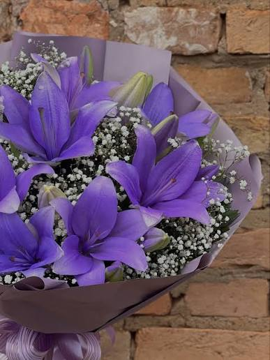

curiosidades sobre Kemilly Vithória
Outra curiosidade é que quando eu tinha 5 anos eu estava saindo do banho e acabei escorregando e abri o queixo, Tive que dar 3 pontos. Pouco tempo depois eu estava dançando, cai e abri o queixo novamente, dessa vez foram 5 pontos. src da tag .

Eu fiz aulas de balé dos 7 aos 10 anos, parei pela pandemia. Hoje eu ainda gosto muito de dançar, mas acho que balé não é meu estilo de dança ideal. Minhas flores favoritas são lírios roxo CSS